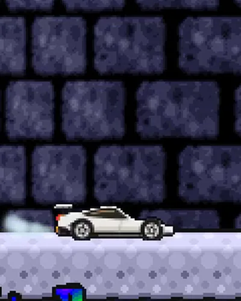
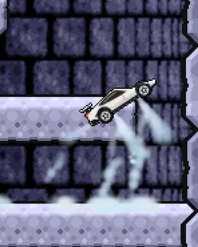
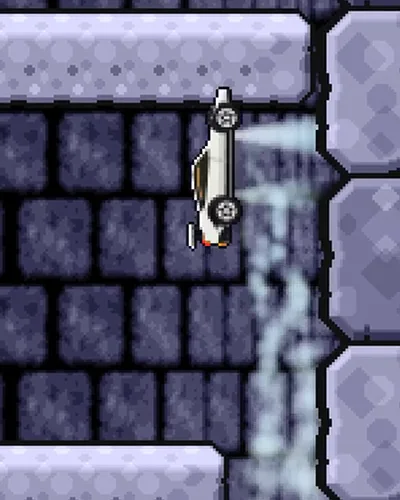
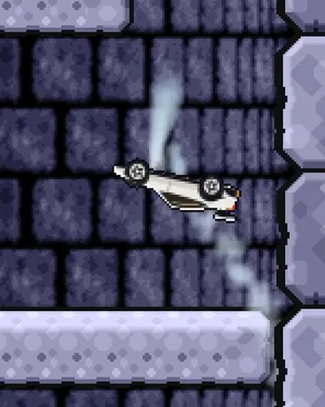
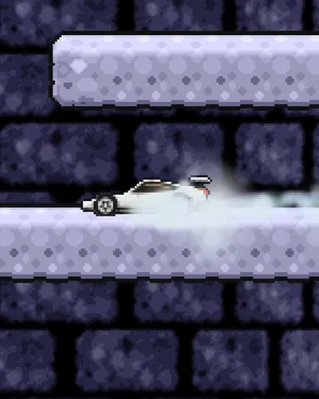

Fan recreation — not affiliated with or endorsed by Free Lunch Design. Icy Tower is © Johan Peitz / Free Lunch Design.
fire17 & friends present a fan edition of
Icy Tower: Roadster Edition
Harold the Homeboy, beanie pulled down over his eyes, has climbed this tower since 2001. It is of infinite height, and the faster you run, the higher you jump.
Disco Dave takes the floor: afro, pink suit, white flares. The same tower and the same physics, with more style on every jump.
Harold's tower has a new climber: the 2026 Tesla Roadster. It backflips up the floors on cold-gas thrusters that fire from where the real car's nozzles are.
The blank outline the original game shipped so anyone could draw their own climber. Bring your own pixels.
16/16 original replays · Mac = Windows = Web · 145,141 tick hashes identical
GENERAL
Icy Tower is a freeware game from 2001 by Johan Peitz of Free Lunch Design. You climb a tower of infinite height, and the faster you run, the higher you jump. This fan edition keeps that game and adds one new climber: the second-generation Tesla Roadster that Tesla showed flying on 15 October 2026.
Underneath is a native rebuild of Icy Tower 1.3.1, transcribed from the original routine by routine, so the jumps feel the way you remember them. It runs on Mac, on Windows, and in your browser.
1:1 FAITHFUL
Every version runs the same C game core, transcribed from Icy Tower 1.3.1. The test is the 16 replays that ship with the original game. A replay records what the player pressed, not where they ended up, so if a single physics rule were off by a hair, the run would drift and finish somewhere else.
- MAC
- 16/16 original replays reproduce their recorded score, floor and combo.
- WINDOWS
- 16/16 original replays reproduce, tick for tick.
- WEB
- 16/16 original replays reproduce, tick for tick.
- ALL THREE
- 145,141 per-tick full-state hashes, identical on Mac, Windows and Web. Combined chain:
ce0ab7382a9dd329
PLAYING
- ← →
- run left / right
- SPACE
- jump
- ESC
- pause
- R
- restart
- M
- mute
- C
- change climber
Four climbers: the Roadster (the default), Harold, Disco Dave and the Template. Every new game starts on the classic ice floors.
- The Roadster keeps accelerating while you hold a direction. The faster it runs, the higher and longer it jumps.
- Bounce off the walls: you turn around and keep most of your speed.
- Land at least two floors above where you jumped to start a combo, then keep doing it before the meter on the left runs dry.
- Jump fast enough and the car backflips. The thrusters fire through the whole flip.
- Every 30 seconds the clock rings and the tower scrolls faster. Don't fall off the bottom.
GOOD SWEET GREAT WOW AMAZING EXTREME
INSTALLING
MAC
Apple Silicon (M1 or newer) · macOS 13 Ventura or newer
- Download
Icy-Tower-Roadster-mac.zipand double-click it to unzip. - Drag the app into your Applications folder.
- The first time only: right-click the app (or Control-click), choose Open, then Open again. macOS asks once because the app isn't notarized by Apple. After that it opens normally.
macOS 15 or newer and no Open button? Go to System Settings → Privacy & Security, scroll down, and click Open Anyway.
WINDOWS
Windows 10 or 11, 64-bit
- Download
Icy-Tower-Roadster-windows.zip, right-click it and choose Extract All. - Open the extracted folder and run the game.
- If Windows SmartScreen says "Windows protected your PC", click More info, then Run anyway. It asks because the app isn't code-signed.
EVERYTHING ELSE
Linux, Chromebook, iPhone, Android, or a Mac or PC you can't install on: no install needed.
[ ▶ PLAY IN BROWSER ]THE ROADSTER
On the evening of 15 October 2026, at SpaceX's rocket test site in McGregor, Texas, Tesla livestreamed the new Roadster doing things cars don't do. It drove up a curved wall, left it upside down and righted itself in mid-air. It hopped over the whole Tesla lineup in a full barrel roll. It ran 0–60 mph in a claimed 0.81 seconds with white jets blasting out of the back. The car was unmanned, and each stunt was a single choreographed run.1,2,6
The top "Rocket" version carries ten cold-gas nozzles fed by compressed air at about 5,500 psi. Nothing burns. The plume is white vapour that looks pale cyan under stage lights, never flame, which is why the gas in the game is ice-cyan and white.3,4
TEN NOZZLES, THREE JOBS
| Group | On the real car | Fires | In the game |
|---|---|---|---|
| Rear main ×4 | a row of four in the rear diffuser, below the plate | straight back | sprint trail; a rev puff while you stand still |
| Lift ×4 | one near each wheel | straight down | take-off, mid-flip pulses, landing brake |
| Nose lateral ×2 | one in each front fender | sideways | a small puff toward you as a flip starts and ends |
WHERE THE GAS COMES OUT
-

Idle rev Standing still, the rear main nozzles puff straight back every 0.6 s.
-

Take-off Front and rear lift jets fire together, harder for higher jumps, and clouds roll out under the wheels.
-

Nose up On a flip jump the front lift jet keeps firing alone for a moment and pushes the nose over.
-

Upside down The nozzles are fixed to the body, so upside down the "down" jets point up, as in the inverted frames of Tesla's kickflip.
-

Landing Both lift jets brake the fall, and the gas splashes sideways off the platform.
One liberty: the real car rolled around its long axis. From the side a roll just looks like the car showing its roof and then its belly, so in the tower it backflips instead, driven by the same nozzles.
SOURCES
- Electrek, 15 Oct 2026: the reveal and the kickflip
- TechCrunch, 15 Oct 2026: variants, thruster count
- paultan.org, 16 Oct 2026: nozzle layout, 0.81 s run, telemetry
- EVXL, 16 Oct 2026: compressed-air tanks, rear nozzles
- Space.com / VideoFromSpace: Tesla's footage, checked frame by frame for the jet positions
- NBC News: barrel roll, landings in a cloud of condensation
- Wikipedia: Tesla Roadster (second generation)
CREDITS
ICY TOWER © Johan Peitz / Free Lunch Design
Written, designed and drawn by Johan Peitz. Music and sound effects by Anders Svensson. Icy Tower is freeware.
"Our only requirement is that you give proper credits to Free Lunch Design and provide a link back to our site. However, this game may not be included in a compilation or any other kind of commercial package without the permission from the author."
How this edition honours that: credit and a link on every page, free forever, no ads, no tracking, no donations, never bundled or sold. It is an unofficial fan edition, not made or endorsed by Free Lunch Design. If you are from Free Lunch Design and want anything changed or taken down, open an issue and it will be done.
THIS EDITION
Roadster pixel art, thruster and gas effects, the native Mac, Windows and Web builds, and this site: fire17 & friends (humans and AI agents), 2026.
Our own parts are open: code under MIT, Roadster art and the gameplay video under CC BY 4.0. Everything that comes from Icy Tower (the tower, Harold, music, sounds, fonts, game data) stays © Free Lunch Design and is not covered by those licenses.
TRADEMARKS
Tesla and Roadster are trademarks of Tesla, Inc. SpaceX is a trademark of Space Exploration Technologies Corp. This is an unaffiliated, non-commercial fan project, not sponsored or endorsed by Tesla or SpaceX. The car is drawn from scratch; no Tesla logos or assets are used.
Set in Cousine (SIL Open Font License).
The tower is of infinite height. The Roadster will never reach the top.
Doesn't mean you shouldn't try.
[ ▶ PLAY IN BROWSER ] [ DOWNLOAD FOR MAC ] [ DOWNLOAD FOR WINDOWS ]